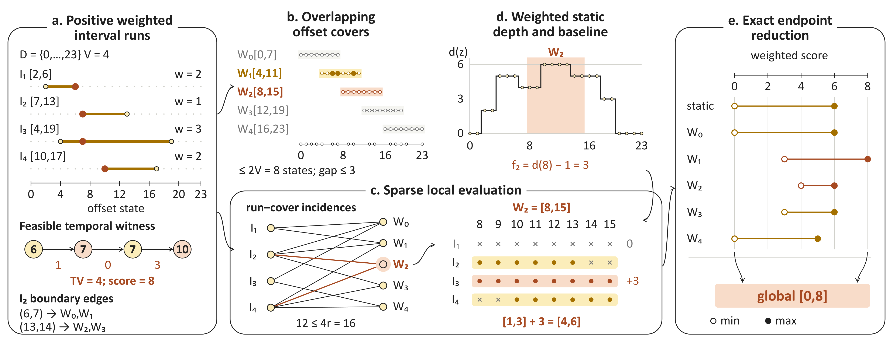
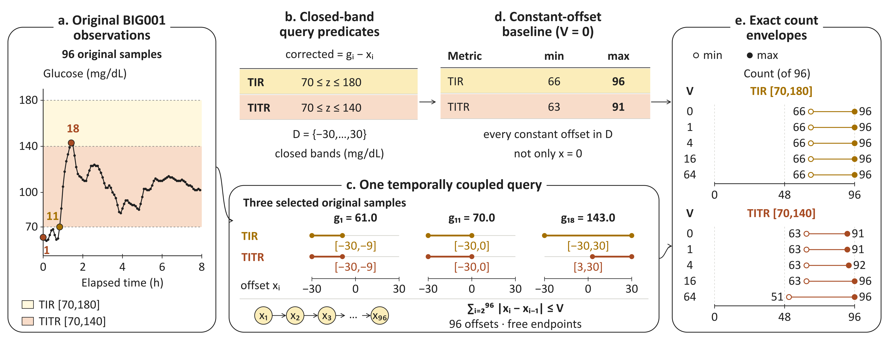
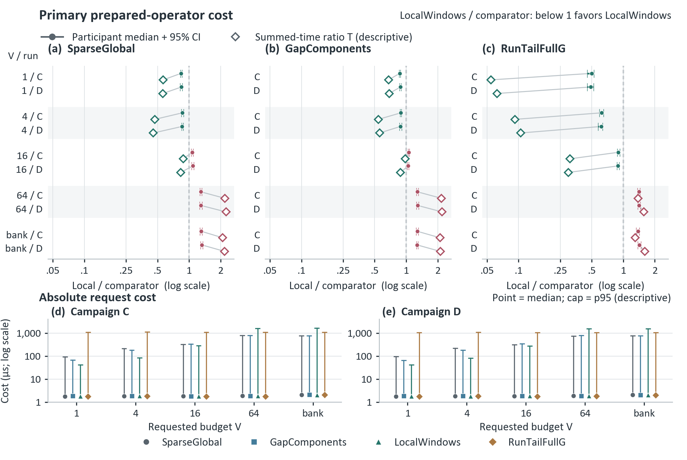

Exact temporal
range queries.
through Local State Windows
The question
How much can a range count change when offsets vary over time, but share one total variation budget?
Compute the exact minimum and maximum. Localize the states. Preserve the temporal dependence.
Explore the methodfor maximum budget V ≥ 1
incidences across the cover
under a shared temporal budget
01 / The method
A small budget, a local state spaceA global constraint.
A local computation.
Each ordered row has an interval of offset states that makes a predicate true. Choose a state xᵢ at every row; the total movement between consecutive states must stay within budget v.
Local State Windows returns the exact extrema of the weighted hit count. It keeps one budget across the entire sequence, with free temporal endpoints.

The exact localization, end to end. In this mathematical example, D = {0,…,23} and V = 4. The witness (6,7,7,10) has variation four and score eight. Restoring fixed contributions and reducing all local and static extrema gives [0,8].
SVG sourceCompress the predicates
Remove zero-reward rows, account for fixed scores, and merge consecutive equal sensitive intervals into r positive-weight runs.
Cover the feasible paths
A path with variation at most V spans at most V offset units. Overlapping windows of at most 2V states cover every such path.
Solve only where it changes
Each interval has at most two boundary edges and at most four sensitive window incidences. A weighted sweep restores fixed contributions.
Arithmetic complexity · V ≥ 1
O(n + r log(r + 1) + rV² + Q) time
O(r + V²) auxiliary space, for Q ordered requests. Budget one uses a boundary-prefix specialization. These bounds are pseudopolynomial in V and assume consecutive integer states and unweighted absolute-distance transitions. Assumptions and limits
02 / A real query
Fixed public BIG001 exampleOne sequence.
One shared budget.
For 96 original glucose samples, the corrected value is gᵢ − xᵢ. The closed TITR band is [70,140] mg/dL; integer offsets range from −30 to 30.
Explore the exact count extrema at the five recorded budgets. Every offset in the sequence draws from the same total movement budget.
BIG IDEAs Lab, participant 001
PhysioNet v1.1.3 · 96 samples
minimum maximum attainable count
At v = 4, the exact TITR count pair is [63,92] out of 96.
These are extrema over admissible offset paths, not confidence intervals. Interior counts need not all be attainable.

Observed data, exact sensitivity bounds. At budget zero, every constant offset in D is allowed. TIR stays at [66,96] for these five budgets. Different metrics may attain their extrema on different paths.
SVG source
Offsets and budgets define an analyst-specified sensitivity scenario. They do not estimate calibrated sensor error or clinical effects. Data: Cho, Kim, Bent & Dunn, BIG IDEAs Lab Glycemic Variability and Wearable Device Data, v1.1.3. ODC Attribution notice
03 / The evidence
Historical native C++17 measurementsSmall-budget gains.
A visible crossover.
Two separately recorded campaigns favor local windows at budgets 1 and 4 under the primary participant summary. At larger budgets, the controls regain the advantage.
The benefit is conditional: full source-to-report timings show no consistent end-to-end gain.
| Requested budget | SparseGlobal | GapComponents | What the summary favors |
|---|---|---|---|
| 1 | 0.838–0.846 | 0.867–0.882 | Local windows |
| 4 | 0.856–0.861 | 0.880–0.889 | Local windows |
| 16 | 1.069–1.086 | 1.040–1.058 | Controls |
| 64 | 1.291–1.293 | 1.276–1.283 | Controls |
| Bank 0, 1, 4, 16, 64 | 1.305–1.319 | 1.269–1.275 | Controls |
Below one favors LocalWindows. Entries are ranges of the C/D median participant geometric-mean paired ratios, not confidence intervals. The largest budget governs the bank’s localization.

Original primary comparisons and absolute costs. Circles and bars: participant summary and 95% bootstrap intervals. Diamonds: the separate summed-time ratio T.
SVG source
A useful exact physical plan for small budgets on the recorded workload. These are historical timings of the manuscript’s native implementation; no timing experiment was rerun for this release. They do not measure Python speed. Fresh replication, second-host portability, held-out generalization and a validated automatic selector remain unestablished.
04 / Use the implementation
Python 3.10+ · standard libraryFrom a question
to exact bounds.
A portable Python implementation, native C++17 driver, exact global and gap-pruned baselines, and a small literal-state correctness oracle.
Browse the repositorygit clone https://github.com/OliverDOU776/Exact-Temporal-Range-Queries-through-Local-State-Windows.git
cd Exact-Temporal-Range-Queries-through-Local-State-Windows
python -m pip install -e .
python -m lsw_range examples/synthetic.jsonfrom lsw_range import solve_intervals
answer = solve_intervals(
[(2, 6, 2), (7, 13, 1), (4, 19, 3), (10, 17, 2)],
domain=(0, 23),
budgets=[4],
)
print(answer.bounds) # ((0, 8),)Prefer the native C++17 path?
The native driver accepts unit-count rows. The synthetic input expands Figure 1’s integer weights into repeated rows.
mkdir -p build
c++ -std=c++17 -O3 native/lsw_range.cpp -o build/lsw-native
build/lsw-native < examples/synthetic_native.txtThe JSON and native demos return [[0,6], [0,6], [0,8]] for budgets [0,1,4]. Use method="global" or method="gap" to compare exact plans, and method="reference" for small-case checks.
05 / Reference & resources
Build on this work.
Code, original figure sources, copied benchmark data and the full query contract are available in the repository.
Zijia Wang. Exact Temporal Range Queries through Local State Windows. Imperial College London.
Code & documentationData and figure attribution. The BIG001 observations use Cho et al., BIG IDEAs Lab data v1.1.3. Evaluation summaries also use Zhao et al., Shanghai diabetes datasets v5. Report predicates and masks follow QoCGM’s pinned author implementation.
Figures 1–3 are the original manuscript artwork. See figure details and provenance and third-party notices for attribution and applicable terms.